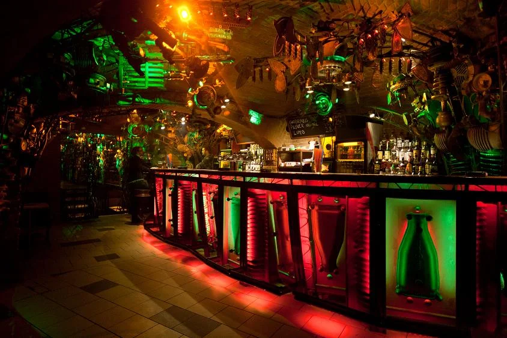

Prague clubs
The best clubs in Prague, from Cross Club to Karlovy Lázně
Two nightlife scenes that barely overlap: five-floor tourist complexes near Charles Bridge, and a smaller run of rooms built from salvaged machinery and a custom sound system for house and techno.
Two scenes, one city.
Prague's nightlife splits cleanly into two scenes that barely overlap. One is built for stag parties and city-break tourism: five-floor multi-genre complexes a few minutes from Charles Bridge, playing everything from oldies to R&B under one roof. The other is smaller, purpose-built for house and techno, and mostly unremarkable from the street. This guide covers both, since both are genuinely Prague's best clubs, just for different nights out.
Cross Club, in more depth.
Cross Club began in 2002 as a private rehearsal space in Holešovice, started by František Sádra Chmelík and a small group of friends with almost no budget, so its décor came from scrapheaps and disassembled electronics rather than a design brief. The club crowdfunded over half a million Czech koruna to expand, and grew into the three-floor venue standing today: welded pipes, cogs and moving mechanical parts cover a basement club, a theatre, a café, a restaurant and an outdoor garden.

Its basement room has run drum and bass, techno, dub and experimental electronic nights since the early years, drawing a bookings policy closer to a UK bass-music club than a Central European tourist venue, and giving Prague's underground scene a fixed address years before Ankali or Boiler Room arrived.
The best clubs in Prague now.
| Club | Area | Music and character | Best for |
|---|---|---|---|
| Karlovy Lázně | Old Town, by Charles Bridge | Five floors, one genre each, in a former spa building open since 1999 | A whole night out without leaving one building |
| Duplex | Wenceslas Square | A glass rooftop club with two dance platforms and city views | International bookings and a DJ Mag Top 100 listing |
| Cross Club | Holešovice | Three floors of salvaged industrial machinery, open since 2002 | Drum and bass, techno and dub with a DIY history |
| Ankali | outside the centre | A techno room built around a custom Funktion-One system, open since 2017 | Deep house through hard techno on a serious sound system |
Best techno clubs in Prague.
Ankali opened in 2017 inside a former soap factory, built by a collective around a custom Funktion-One sound system rather than a look, and became what Resident Advisor and DJ Mag both call the city's flagship electronic venue, running deep house through hard techno depending on the night. In April 2025 its team said the club was financially unsustainable and launched an emergency store to survive; it was still booking international techno and house names into 2026, and nothing in its own statements has called the crisis over.
Boiler Room's first visit to the Czech Republic, in December 2018, put three Prague artists, Fatty M, Schwa and Eva Porating, on the same bill as the British techno DJ Tommy Four Seven and the British house DJ Anthea.
Eva Porating played the same broadcast and has since become a regular on HÖR and other European club radio channels.
Where to go out in Prague.
Karlovy Lázně, Duplex and most of the tourist-facing clubs sit within walking distance of Wenceslas Square and Charles Bridge, in the historic centre.
Cross Club is a short tram ride north in Holešovice, an industrial district turned arts quarter on the Vltava's east bank. Ankali sits further out, reached by tram or a longer walk. Its reputation was built on the sound system, not the address.
Prague clubs FAQ.
What is the biggest club in Prague?
Karlovy Lázně, a five-floor former spa building 100 metres from Charles Bridge, open since 1999. Each floor runs a different genre, from a silent disco to a vintage Cadillac used as a DJ booth for 1950s to 1970s music, and it markets itself as the largest club in Central Europe.
Is nightlife better in Prague or Budapest?
They answer different questions. Budapest's strength is its ruin bars, spread across the Jewish Quarter; Prague's strongest room, Cross Club, is a single purpose-built venue with a more consistently electronic booking policy, and its five-floor tourist clubs such as Karlovy Lázně have no real Budapest equivalent.
Does Prague have a real techno scene?
Yes. Ankali, open since 2017 around a custom Funktion-One system, and Cross Club's basement, running since the early 2000s, both book internationally, and Boiler Room recorded its first Czech broadcast in Prague in December 2018 with three local DJs on the bill.
Is there a dress code at Prague clubs?
Duplex turns away sportswear and expects smart-casual dress. Karlovy Lázně is reported both ways: some visitor guides describe a similar casual dress code, while the club's own site says it has none. Cross Club and Ankali have no dress code, in keeping with their DIY and industrial character.
Is Ankali still open?
Yes, as of 2026, though its team said in April 2025 that the club was financially unsustainable and launched an emergency store to keep it running. It kept booking international techno and house names into 2026, but nothing in its public statements has declared the crisis over.
Sources.
- Wikipedia: Cross Club
- Atlas Obscura: Cross Club
- Radio Prague International: Cross Club, an independent culture centre with a twist
- Karlovy Lázně: about
- DJ Mag: Top 100 Clubs 2022, DupleX
- DJ Mag: Top 100 Clubs 2025, DupleX
- Mixmag: Prague club Ankali urges support to secure its future (2025)
- Resident Advisor: Prague club Ankali at risk of closure (2025)
- Boiler Room: Boiler Room Prague (2018)
- Set counts and catalogue details are measured from this site's own catalogue of recorded DJ sets, as of September 2026.
Continue reading
Read next.
 Rave spots~11 min read
Rave spots~11 min readBest Clubs in NYC: From the Paradise Garage to Nowadays
Nowadays, Basement, Public Records, Good Room and Elsewhere: the best clubs in NYC for house and techno now, and the history from the Loft to Output.
Read article → Rave spots~7 min read
Rave spots~7 min readBest Clubs in Tokyo: WOMB, Contact and the Ban on Dancing
WOMB, Contact, Vent and Circus Tokyo: the best clubs in Tokyo for house, techno and bass music, and the 68-year law against dancing that shaped them.
Read article → Rave spots~6 min read
Rave spots~6 min readBest Clubs in Budapest: A38, Instant-Fogas and Turbina
A38's converted cargo ship, the seven rooms of Instant-Fogas and Turbina's techno nights: the best clubs in Budapest now, and the ruin bars several grew out of.
Read article → Festivals~13 min read
Festivals~13 min readBest Electronic Music Festivals in Europe 2027, Compared
Fourteen major festivals and seven smaller ones, from Tomorrowland to Garbicz, compared by sound, scale, setting and 2027 dates.
Read article →